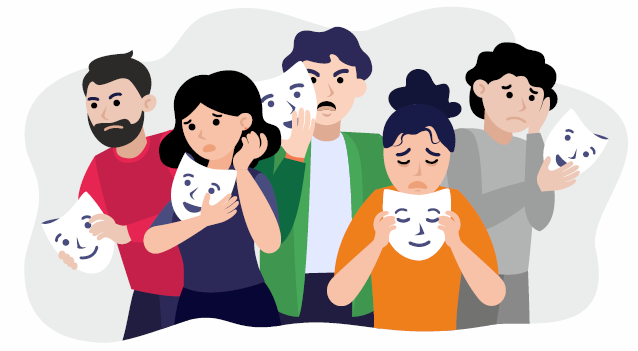
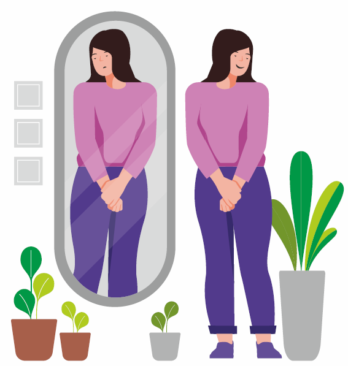

Unhappy people have a deep sense of confusion about the lack of predictability in the outcome of events and actions.
unhappiness
The state of mind in which we are dissatisfied with or disturbed by the circumstances of our life is called unhappiness.
In this state our circumstances generate constant thoughts, emotions and feelings within us.
When we are unhappy, we have trouble accepting both situations as well as the attitude of people around us. This friction generates negativity that keep us feeling miserable.

what causes unhappiness?
The belief that we have the power to change our circumstances to match our expectations is the root cause of unhappiness. This belief establishes a relationship between our circumstances and our state of mind i.e. we start feeling good when are circumstances are good and bad when our circumstances are bad.
The difference between our expectations and reality (circumstances) is what motivates us to act out our part in the story of life. Since expectations rarely meet reality, we remain unhappy most of our life.

how can i be happy?
Unhappiness is a state of mind. When we are unhappy, we experience one or more of the following.
Confusion
disappointment
Confusion about the basic principles on which the world operates along with the lack of predictable outcome leads to disappointment.
stress
As we intensify our efforts to combat unpredictable outcomes, we overextend ourselves and get stressed.
work & anxiety
Uncertainty of outcomes causes increasing graduations fo Worry and Anxiety. Worry is the unpleasant feelings bought about by the fear or apprehension of negative outcomes.
sadness
When things do not turn out as expected, we experience sadness. Sadness is a form of emotional pain associated with feelings of disappointment, disadavantages, loss, grief, helplessness, sorrow, and despair.
depression
Chronic sadness destroys our ability to experience positive emotions. Without the simple joys of living to boost us, we become overwhelmed and sadness turns into depression., hopelessness and despair.

false positive feelings
Confusion things that make us unhappy with those that make up happy is a common mistake. Many people associate the following feelings with happiness. However, we experience these feelings in a state of deep unhappiness.
Pleasure
Pleasure is a mental experience that we find enjoyable, positive, or worth seeking. It is a component of our reward system that drives us to seek things we find pleasurable.
Pleasure is a temporary experience and as a cost associated with it. Constantly seeking things that give us pleasure and inability to get satisfied drive us into further unhappiness.
Achievement
A sense of achievement is a temporary pleasurable feeling we get when we reach our goals. It is a taste of how we feel wen our expectations meet reality. Our sense of achievement keeps us motivated so we can improve upon our achievements. The boost we get from it is temporary and intensifies our struggle for success even more.
Self Confidence
Self-confidence is the trust one has in their abilities. As a person becomes more experienced, their trust in their ability increases. Conversly, lack of success kills self-confidence.
Self-confidence is a state that depends on the circumstances of our life. When we experience a bad stretch, our self-confidence is the first thing that is impacted.